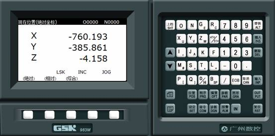
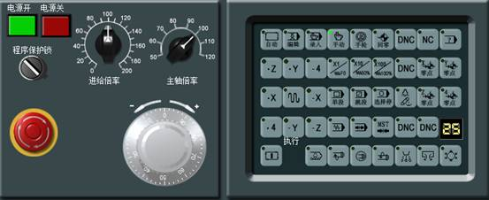
手摇进给
用手摇脉冲发生器，对机床的进给进行精确调整。
（1） 把“方式选择”开关设定在“手轮”位置
（2） 选择移动轴
（3） 旋转手动脉冲发生器的手摇盘顺时针旋转…………+方向逆时针旋转…………-方向（方向随机床制造厂所规定的不同而异）
（4） 移动量：有的操作面板带有下面的选择旋钮。×10 表示移动量乘10，×100 表示移动量乘100
点动进给
点动进给能够使机床移动
1) 把方式选择开关设定在“手动”位置
2) 选择运动轴机床沿选择方向移动
注1：用手动操作可同时控制2轴。
注2：电源接通后，即使“方式选择”开关定在“点动”位置，机床被选择的轴也不立即运动，此时必须对轴重
新进行选择。
3）选择点动进给速度
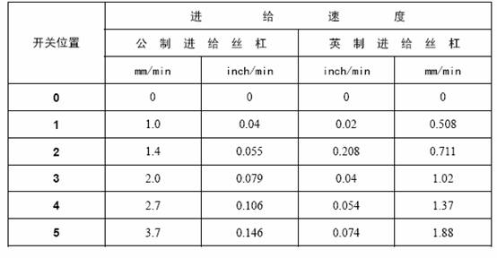
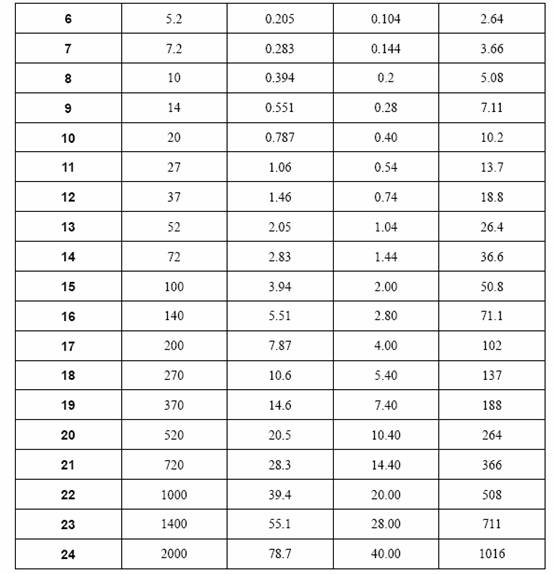
注1：不同的机床,表中数值不同。
注2：上表所列进给速度误差约为±3%。
4）快速移动
手动绝对值
如此开关设定在“开”（ON）。则手动操作移动量被加到坐标轴上。
（1） 手动绝对开关“开”（ON），坐标值随手动操作而变化
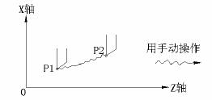
（2） 手动绝对开关“关”（OFF），坐标值不变化
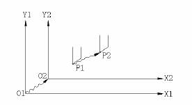
（例）例如有如下一段程序：
……
G01? G90? X100.0? Y100.0? F010；①?????????????
?X200.0? Y150.0????? ；②?????????????
?X300.0? Y200.0????? ；③
……
a) 上面的程序段①已经执行完毕。程序段②在经过手动操作（X 向移动20.0，Y 向移动100.0） 后才执行。
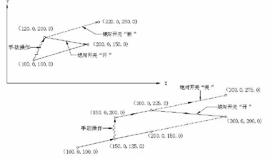
b) 在执行程序段②时按下“进给保持”（FEED HOLD）按钮。在经过手动操作（Y+75.0 ）在重新按“循环启动”（CYCLE START ）按钮以释放保持状态继续执行。
c) 在执行程序段②时按下“进给保持”（FEED HOLD）按钮。在经过手动操作（Y+75.0 ）后复位。程序段②重新输入。
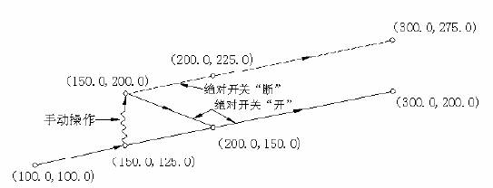
d) 当跟在手动操作后的指令是单轴指令，则只有被指令的轴返回到该轴编程绝对位置。?????????
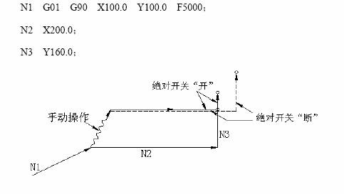
e) 当跟在手动操作后的指令是增量指令，则轴移动到的位置与手动绝对开关“关”时所指令的位置相同。
注1：当刀具半径补偿C偏置时，插入手动操作。此时刀具的实际运动路线如下：
（1） 手动绝对开关“断”
刀具半径补偿C 接通时，如果在刀具半径补偿C 时，关掉“手动绝对开关”进行手动操作。重新启动后刀具自动进行的路线将接插入手动操作的偏移量平行移动。
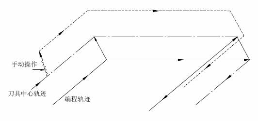
2） 手动绝对开关“开”刀具半径补偿C 接通时。如果在刀具半径补偿C 时接通手动绝对开关进行手动操作。则重新起动后刀具按绝对指令自动运行路线如下：手动操作后的程序段刀具路线与下一程序段起点矢量平行。刀具路线由下一程序段与再下一程序段之间的矢量来计算。在进行有手动操介入的拐角加工时，刀具路线算与上面的情况相同。程序如果不是由绝对指令而是增量指令组成，刀具路线与手动绝对开关“关”时相同。
（a） 在执行程序段时进行手动操作例1在下图的编程路线（PA→PB→PC→PD）中，假定在按了进给保持按钮之后，用手动操作把刀具由PA与PB之间的PH点移到PH′点。现程序段终点PB 因手动操作产生的偏移量而被转移到PB′点，原PB 点的矢量VB1 和VB2 同样也分别被平行转移为矢量V′B1 和V′B2。
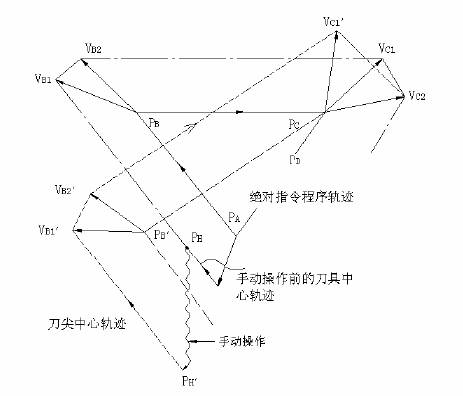
下一程序段（刀具路线由PB 到PC）和再下一程序段（由PC 到PD）之间的矢量不需要补偿，有补偿的新矢量（VC1′VC2′）由两程序段（程序路线由PB′和PC 到PD 和由PC 到PD）之间的相互关系产生。但是，因矢量VB2′与矢量VB2 相同。所以刀具偏移在PB′和PC 之间的一段刀具线路上未准确执行，而对于PC 点后的程序段，刀具偏移则精确地执行。
手动返回参考点
机床可以用手动操作返回参考点：
1） “方式选择”设定在手动位置
2） 按回零键
3） 用点动进给使各轴向参考点移动。
机床以快速移到减速点，然后以FL 速度移向参考点。在快速移动时，快速移动倍率仍有效。
4）机床在参考点停止，返回参考点结束指示灯点亮。
自动运转的起动
存贮器内存储的程序起动运行的步骤。
（a） 选择程序号。参阅4.4.16“程序号检索”。
（b） 选择自动工作方式。
（c） 按循环启动按钮：按下“循环启动”按钮，开始自动运行。同时“循环启动”指示灯点亮。
注1:在“编辑”方式按下“循环启动”按钮，读进的程序即被寄存。寄存方式与用参数设定时按 输入按钮时相同。
注2:“循环启动”按钮遇下述情况时无效。
（a） 按下“进给保持”按钮时
（b） 按下“急停”按钮时
（c） “复位”信号接通时（详细情况与机床制造厂联系）
（d） “方式选择”开关被设定在错误的位置（自动或编辑方式除外）时
（e） 当正在检索序号时
（f） 当出现报警时
（g） 当选择了自动运行时
（h） 当NC 系统未做好准备（READY）时
自动运转暂停
按“进给保持”按钮则“进给保持灯亮。同时“循环启动灯”灭。此时：
（a） 如果机床正在移动，则进给经减速后停止；
（b） 如果是“暂停”状态，则暂停状态不在继续即使是在“进给保持”状态中也是如此；
（c） 机床在M、S、T 或B 功能执行结束后停止。
单程序段
当单段开关被转到ON 位置，按下循环启动按钮，则控制装置每次只执行一个程序段后即停止。接通“单段”开关控制装置只执行一个程序段即停止。按下“循环启动”按钮时，控制装置在执行完下一程序段后停止。
注1:在G28、G29或G30方式时，如使用但程序段功能刀具在中间点停止。
注2:在固定循环加工时。如果单程序段功能有效，则刀具在固定循环（见下图）的循环路线①，②或⑥段的终点停止。 当固定循环重复计算不是1 时，除最终循环的第⑥段外，运行每次停止,“进给保持”指示灯亮。在①和②段每次停止时，“进给保持灯”点亮。
注3:对于M98P―，M99，以及G65，G66或G67的程序段,单程序段停止无效。但是,如果M98或M99程序段中的指令是除O，N，L和P以外的地址,则单程序段停止有效。
自动运行过程中的MDI操作
（1） 把“单段”开关设定在ON 位置。
（2） 选择录入（MDI）工作方式。
（3） 进行MDI 操作。
（4） 为使自动运行重新开始，回到原来的工作方式，按操作盘上的“循环启动”按钮。
注1：在用MDI指令时，在循环运动中保留的模态数据受到影响。
注2：由MDI指令的模态数据对MDI操作自动运行仍有效。
注3：在MDI操作中，刀具半径补偿C不执行。
注4：在进给保持状态，MDI操作不能执行。
跳过任选程序段
当某程序段包含有“/n”（n=1～9）时该功能允许控制装置跳过此程序段。对应于n=19每个数字，分别有各个开关与之对应。
注: 当程序段由存贮器读进缓冲器时，对任选程序段跳过功能是否有效进行判断。因此，此功能对于已读入缓冲寄存器的程序段无效。
进给速度倍率
对于用F功能设定的进给速度,可以设置由10%～200%。增量为10%的倍率。
空运转
如果在存贮器或MDI指令的循环运转中,此开关被设定在ON位置，则F功能不起作用，机床以下面的速度移动。
快速移动按钮ON/OFF? 快速移动时? 切削进给时?
快速移动按钮ON? 快速移动? 最大点动进给速度?
快速移动按钮OFF? 点动进给速度（见注）? 点动进给速度
快速移动倍率
?在机床操作面板上可以设置任选的倍率为100%、50%、20%和F0的快速移动倍率开关。 当进给速度为10m/min而此开关被设定为50%位置，则实际进给速度则变为5m/min。 F0是由机床制造厂规定的固定速度（进给速度）。此功能用于下述情况：
（1） 由G00 规定的快速移动；
（2） 固定循环时的快速移动；
（3） G27，G28，G29 和G30 时的快速移动；
（4） 手动快速移动；
（5） 手动返回参考点时的快速移动。
手动手摇插入 ：对于自动运行中的特定轴（由参数固定），除了该轴本身的自动运动外，也能执行用手轮操作的运动。
手摇插入操作
在下述情况下转动手动脉冲发生器可进行手摇插入操作。
（1） 方式：自动方式或MDI方式。
（2） 动作状态：在直线插补，圆弧插补，螺旋线插补或正弦曲线插补过程中可进行手摇插入。但不包括下面情况：
（Ⅰ）报警时；
（Ⅱ）任何轴都不移动时；
（Ⅲ）定位有效时；
（Ⅳ）联锁有效时；
（Ⅴ）无移动指令时。
（3） 手摇轴选择信号
手摇轴选择信号（HX、HY、HZ、H4、H5）与要进行手摇插入的轴相通（接点闭合）。
手摇插入移动
（1） 移动量：手摇插入的移动量与手动手摇进给时相同。此移动量取决于手动脉冲发生器刻度和手摇进给倍率（X1、X10、X100），并与自动运行移动量叠加。
（2）移动速度：运用手摇插入时的轴向速度是由自动运行移动速度在叠加上手摇插入的移动速度。因此，当轴向速度超过快移速度时，轴向速度即被限制为快移速度(参数（HR）)。由于超过快移速度的部分被丢失，造成位移量与手摇脉冲发生器的刻度盘示值失配。
（3）手摇插入移动与各种信号的关系如下：
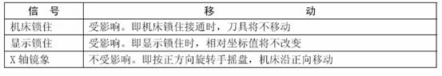
（4）手摇插入移动与各种位置显示的关系如下:
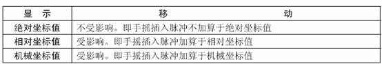
（5）移动量的显示：手摇插入的移动量可以用诊断显示（诊断号805～809）。显示诊断时,按MDI盘的功能键诊断
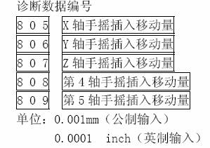
指令值的显示
（1） 按命令按钮。
（2） 按页面按钮。数据将以下面的两种方式显示。
（Ⅰ）执行指令值时，显示以前设定的模态值。
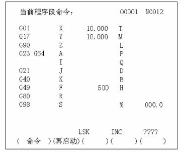
在上图中，接在字符%后面的数字表示进给速度。
（Ⅱ）显示由MDI输入的指令值或下次要执行的指令值。
（Ⅲ）显示刀具半径补偿C进给刀具偏移时要执行的下一段的指令值。
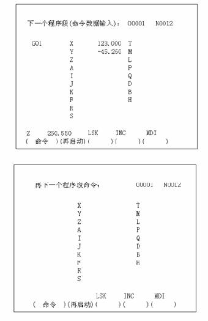
输入、输出及其它的显示和设定
（1） 按设定按钮
（2） 按页面按钮，设定和显示有下面两种方式。
（Ⅰ）输入和输出的设定
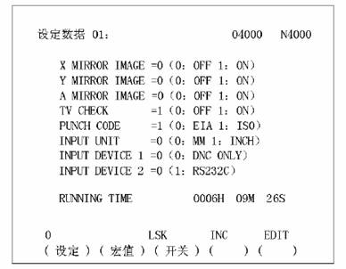
设定（程序保护锁打开有效，锁住无效，可用参数切换。）
（a）? 把方式选择开关设定在MDI 方式。?
（b）? 按光标按钮，把光标移动到要改变的项目位置上，光标不能用地址键N 移动。?
（c）? 按照下面的表，用P 键输入1 或0?
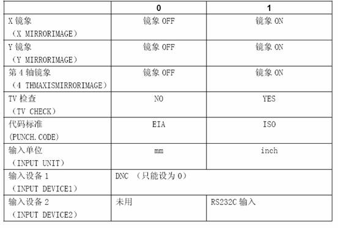
用MDI操作
由MDI&DPL面板可以输入要执行的一个程序指令。
（1）例如：X 10.5 Y200.5
（a） 选择开关扳到MDI 位置。
（b） 按命令按钮。
（c） 按页面按钮，在画面左上方显示：下一个程序段(命令数据输入)
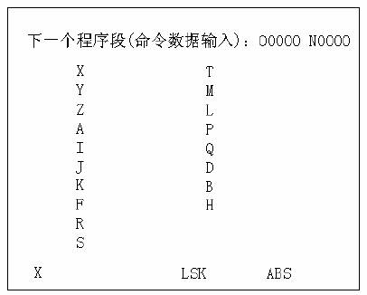
（d） 依次按下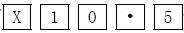
键和输入按钮，如果按输入按钮前输入的数字有错，再按取消按钮键并再次输入正确的数字
（e）依次按下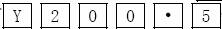
键和输入按钮，如果按输入数字有错误，按照输入X时同样的办法处理
（f）按机床操作面板上的循环启动按钮。
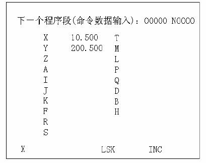
（2）在按循环启动按钮前，删除X10.5? Y200.5 中的Y200.5。
（a） 依次按 Y ，取消，输入。
（b） 按操作面板上的循环启动按钮。
（3）删除模态数据
复位（RESET）
按按 复位 按钮，一般情况下这可以解除报警状态。 按钮，NC系统即被置于如下状态。?
复位
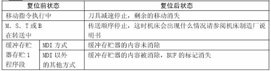
在任何情况下，按复位按钮把NC系统置于复位状态。在MDI以外的其它方式,NC系统则被置于标记跳过（LABEL SKIP）状态。
程序的显示
（1） 编辑方式时，按程序键，显示现选择程序中含有被选择字的页面。
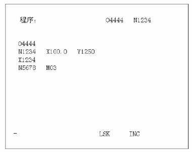
自动运行时，按程序按钮，显示含有现在执行程序段的画面。
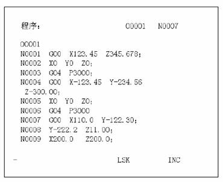
光标的含义（自动运行时）
（a） 当光标闪烁时，显示下次要执行的程序段。
（b） 当光标不闪烁时，显示现在执行中的或已执行完了的程序段。
程序号检索
在存贮器中已存入几个程序时，可以检索其中的一个程序。
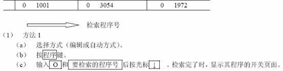
（2） 方法2
（a） 选择自动方式。
（b） 选择程序。
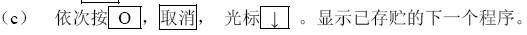
（3） 方法3
（a） 选择编辑方式。
（b） 选择程序。
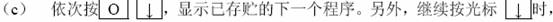
↓ 时，依次显示已
存贮的程序，用于检查已存贮的程序号。
程序的删除
（程序保护锁打开有效，功能按钮程序）删除存贮器内存贮的程序。
（a） 选择编辑方式。
（b） 按程序。
（c） 按 O ，程序号，删除，则将此输入程序号的程序删除。
程序编辑
(功能按钮：程序 )
这个功能用来修改存贮的程序内容。
（1）? 设定方式选择开关到编辑。
（2）? 按 程序 按钮。
（3）? 选择一个程序，当程序已被选择，继续进行（4）。否则进行程序号检索。
（4）? 检索要修改的字，可以用扫描方法或字检索方法。
（5）? 修改，插入或删去字。
注1：字的概念和编辑单位。字由地址和它后面的数字组成。但对用户宏程序而言，字的概念不明确，因此使用“编辑单位”这个概念。编辑单位在一次操作中是作为修改和删除的对象，并且在一次扫描中把光标移动到编辑单位的开头。插入数据时，数据被插到编辑单位的后面。
编辑单位的定义
① 从一个地址到下一个地址之前。
② 地址是一个字母符号：WHILE、GOTO、END、DO、=、或 ；（EOB）。 根据这个定义，字也是一个编辑单位。根据以下关于编辑的解释，严格地说，字应该称为编辑单位。注2：在程序执行期间，通过单程序段跳过，进给保持等功能暂时停止加工，而在对程序进行修改，插入和删除之后，不允许继续执行程序。否则程序不能按照程序数据的规定正确地执行。程序数据在继续加工之后显示在LCD上。 如果要通过零件程序编辑方式修改存贮数据，就要在执行程序之前的复位条件下或编辑之后执行复位操作下修改存贮数据。
用户宏程序变量值的显示和设定
可以将所有通用变数值和现在调用的用户宏程序主体的局部变数数值显示在LCD上。 变数数值为<空>时，显示为空白。绝对值趋过99999999 时，OVER FLOW；绝对值不是0 且小于0.0000001 时，显示UNDER FLOW。
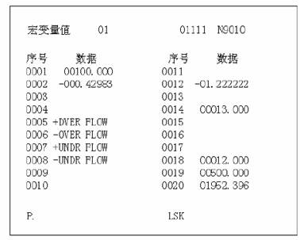
显示
（1）选择设定
按设定按钮以便设定显示（SETTING DISPLAY）。再按一次设定按钮。
（2）因为显示覆盖6个页面，要按页面按钮显示需要的页面。
页面1――现在调用的嵌套的局部变数#1-#20。 页面2――现在调用的嵌套的局部变数#21-#33。 页面3――通用变数#100-#119。 页面4――通用变数#120-#139。 页面5――通用变数#140-#149。 页面6――通用变数#500-#509。
（3）把光标移到要显示的变数号的位置。
方法1：按光标按钮。顺次移动光标。指针一越过页面，画面就转移到下一页。 ２７
方法2：用 N ，变数号和输入键入设定（程序保护锁打开有效）。
（a） 选择MDI 方式
（b） 在显示变数和移动光标到要修改的变数号位置后，用 P ，变数值和输入键入。
用户宏程序编辑
用户宏程序可以使用上档键进行编辑，在编辑方式且程序保护开关释放时进行键操作。然而应该注意下面的不同点。
（a）上档键
当上档键被按下时，光标（键盘输入光标：光标位于最后输入数据的字符位置）从初始的“―”改变成“∧”。在这个状态下，按在键顶的右下角带字符的键。这个右下角的字符便可输入。一个字符输入之后，光标恢复到初始的“―”。如果上档键按2 次，光标也恢复到初始的“―”。
（例如）
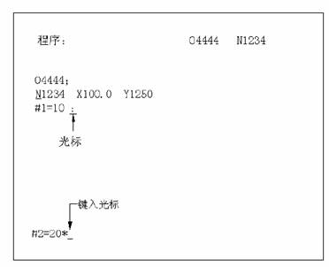
（b）程序的删除修改和插入
在对已经输入的用户宏程序进行编辑时，光标在如下的位置上移动。
（i）地址
（ii）任选程序段跳过的/位置
（iii）置换语句在左边开头#位置。
（iv）（・=）OR；位置。
（v）IF、 WHILE、GOTO 、END、DO 的开头字符位置。在LCD 画面上，以上各符号前各有一个字符位置的空格，程序的删除，修改和插入可在前边光标
（c）用户宏程序字的缩写用户宏程序字进行修改或插入时，最前边二个字符可以作为字的缩写，字下边划线部分作为缩写可以代替字。WHILE，GOTO，END，XOR，AND，SIN，COS，TAN， ATAN，SQRT，ABS，BCD，BIX，FUP，ROUND。
用户宏程序
用某一组指令构成某功能，并且就象子程序一样地存在存贮器中，这些存贮的功能由一个指令来代表，因此，对于执行的功能只需要规定其代表指令。这组被存储起来的功能就称之为“宏程序体”，其代表指令称之为“用户宏指令”。宏程序体可以简称宏程序。用户指令也可以叫做宏程序调用指令。
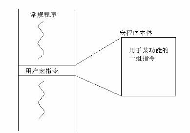
关于宏程序的三个要点是：变量能够用在宏程序体中，能够依据变量完成操作，以及实际能赋予用户宏指令中的变量。
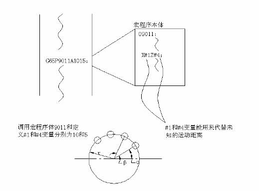
上图所表示的那种环形分布的螺钉孔很容易加工。
在用于环形孔的宏程序体被编程及记录之后，如果NC具有环形孔加工功能的话它就可以工作了。 只要通过下面这条指令，编程人员就能调用环形孔功能。
G65 P p R r A a B b K k ；
p：环形孔的宏程序号
r：半径
a：孔的开始角度
b：孔间的角度
k：孔的数目
这样使得用户自己也能提高NC的性能。宏程序体可以由机床制造厂提供。也可以由用户来制作。
变量
在宏程序中，变量用来代替数字的数据。用户可以对其定义任何值（在允许的范围内）。变量的应用使得宏程序比常规的�I程序更通用灵活。 在使用某些变量时，各变量由变量号区别
变量的表示
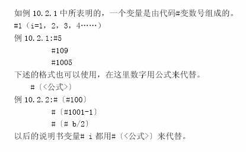
变量的引用
跟在地址后的数值可由变量来代替。假如程序是<地址># 1 或<地址>-# 1 ，表明把变量值或是它的补数，作为其地址的指令值。
例
F #33 如果#33= 1.5 ，就和F1.5 相同。
Z-#18 如果#18=20.0，就和Z-20.0 相同。
G #130 如果#130=3.0，就和G3 一样。
（1）禁止使用变量的地址1 ，：，O 和N，即不能使用：# 27 或N # 1 这类写法，在跳过任选程序段/n中的n 倍（n = 1 ～ 9 ）不能作变量用。
（2）变量号由变量来代替时方法如下：在# 5 中的 5 用 # 30 来代替时，它不能写成 # #30 而是写成了#〔 30 〕。
（3）对于各地址，变量值不能超过最大指令值。例如，当 #140=120时，M #140 就超过了最大值M代码必须小于99）。
（4）不能根据数字号进行识别,比如 #30 =02,就认为F #30 是F2.
（5）不能识别 �C 0和 + 0。就是说在# 4 = - 0的情况下，X # 4 就被认为是X 0。
（6）在把变量用于地址数据的时候，有效位以下进行圆整（四舍五入）。
（7）跟在地址后边的数值也能用<公式>来代替，假如用<公式>[<公式>]或<公式> - [<公式>] 作程序，把<公式>的值或用它的补数作为地址的指令值。
注意：在括号里一个不带小数点的常数要假定在它的末尾有一个数点。
例：
X[ #24+ #18*COS（#1）]
Z-（#18+ #26）
未定义的变量
还没有定义的变量值叫做<空的>。变量 # 0 用于总是空的变量。
一个未定义的变量具有下述性质：
（1）变量的引用
在一个未定义变量被引用时，地址本身都被忽略
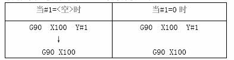
（2）运算公式
除用<空>作置换的情况，与变量值O相同
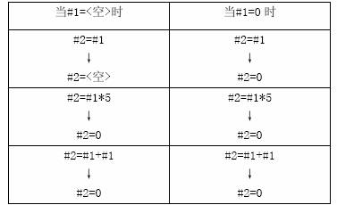
（3）条件表达式
公对E Q 和 N E 的情况<空>和0不同。
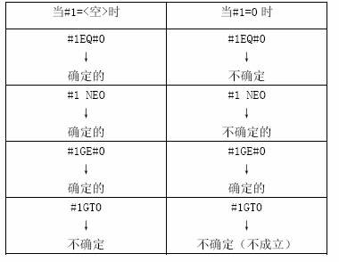
系统变量（用于用户宏程序B）
（1）接口信号#1000到#1015和#1032，#1100到#1115和#1132。
[输入信号]
接口输入信号的状态由系统变量#1000到#1032的读数值确定
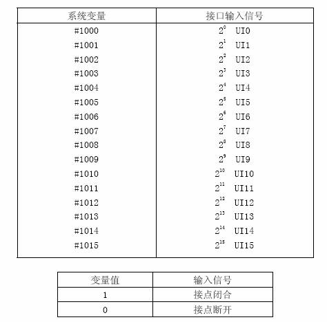
由于变量值的读数是1.0或0.0而不考虑单位，但在制备的宏程序中必须考虑单位。
通过读系统变量#1032，一次读入所有的输入信号。
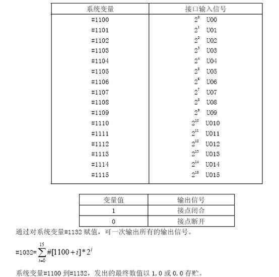
（2）刀具偏置量#2000～#2200，工件偏置量#2500～#2906。
刀具偏置量用系统变量#2001～#2200 ，工件偏置量用系统变量#2500 和#2906 ，通过读这些变量值确定偏置量，通过给系统变量#1 赋值可改变偏置量。
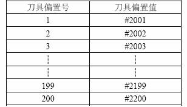
#2000 可以读，但它的数值总是0。
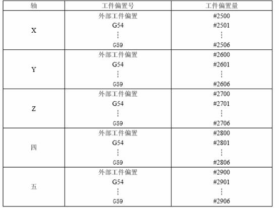
（3）报警#3000
当发现宏程序中有错误时，就会发生报警，若报警号规定在系统变量#3000 中，在处理了前一程序段之后，报警灯点亮，NC 装置处在报警状态。
#3000=n（ALARM MESSAGE）：
选择标准规格中没有使用的报警号，并设置在宏程序中。（n＜200 ＝一个少于26 个字符的报警内容
可规定在释开始与注释结束代码之间。
（4）时钟#3001，#3002
通过读时钟用的系统变更#3000，#3002 的值可得知时钟的时刻。时间亦可由赋值给系统变量来预置。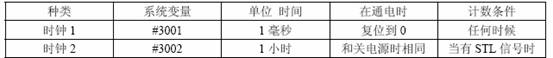
各时钟的准确度在16 毫秒以内，时钟1 在6536 毫秒时溢出将返回到0。只要不预置，时钟2 将继续增加。
5）禁止单程序段停止和等待辅助功能结束信号。
在下述数值赋给系统变量#3003 时，单程序停止功能将被禁止。并提前执行下一个程序段而不等待辅助功能（M，S，T，B）结束信号（FIN），在不等待结束信号的情况下，分配结束信号（DEN）不发送。注意不要在后边再接着规定一个不等待结束信号的辅助功能。
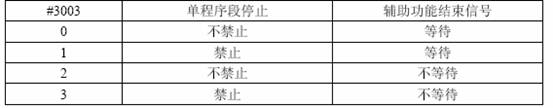
（6）在#3004 中规定给进保持，进给速度倍率和准停校验无效。
若把下列数值赋予系统变量#3004 ，则其后程序段的进给保持和进给速度倍率无效，并且不再执行准停校验。在一个进给保持无效的程序段执行期间，按下进给保持键。
1 一直按住该键，进给保持有效的第一个程序段的开头执行进给保持。
2 按一下该键就松开，这时进给保持灯点亮，但并不象上述情况那样执行进给保持，而是在进给保持有效的第一个程序段的终点才开始进入进给保持。
（7）对应于设定数据#3005 的变量
通过对系统变量#3005 赋值来建立设定数据。在用二进制数来表示系统变量#3005 的值时，其各位与各设定数据相对应。
（8）模态信息#4001～#4120
模态信息指令的现在值可由读系统变量#4001 到#4120 的值来确定。其单位是指令时的单位。系统变量模态信息
（9）位置信息#5001～#5105
位置信息可由读系统变量#5001～5015 来确定，其单位是毫米还是�迹�取决于输入系统。
系统变量#5001#～#5105 不能用于运算指令左边的项。
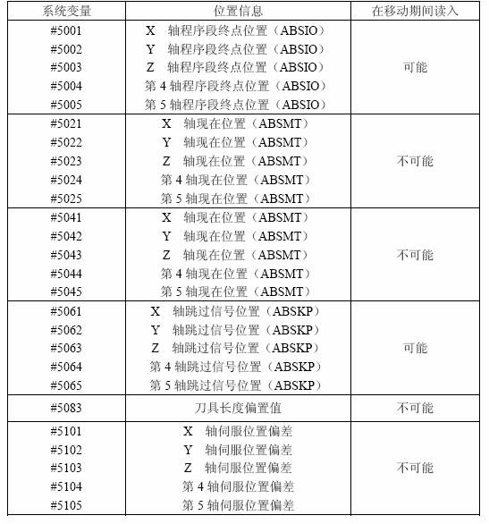
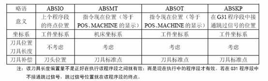
运算指令
变量之间可进行各种运算，运算指令如一般算术式编制程序。
#i=＜公式＞
一个运算指令其右边的＜公式＞是个常数，变量、函数和算符的组合。常数用来代替#j 和#k。＜公式＞中用小数点的常数可以认为在其末尾有小数点。
变量的定义和置换
#i=#j 定义，置换
加法运算
#i=#j+#k 求和
#i=#j-#k 减法
#i=#joR#k 逻辑和（对32 位的每一位）
#i=#jXOR#K 异或（对32 位的每一位）
乘法运算（宏程序B选择）
#i=#j*#k 乘积
#i=#j/#k 商
#i=# JAND#K 逻辑乘（对32 位的每一位）
函数（宏程序B选择）
#i=SIN[#j] 正弦（单位：度）
#i=CON[#j] 余弦（单位：度）
#i=TAN[#j] 正切（单位：度）
#i=ATAN[#j]/ [#k] 反正切（单位：度）
#i=SQRT[#j] 平方根（单位：度）
#i=ABS[#j] 绝对值
#i=BIN[#j] 从BCD 到BIN 的转换
#i=BCD[#j] 从BIN 到BCD 的转换
#i=ROUND[#j] 按四舍五入整数化
#i=FIX[#j] 舍去小数点以下部分
#i=FUR[#j] 小数点部分进位到整数部分
注：怎样使用ROUND 函数。
（1）如果函数ROUND 用于运算指令或在IF 或WHILE 条件式中，对原始的具有小数点的数据四舍五入。
（2）地址指令中使用函数ROUND 时，以其地址的最小设定单位四舍五入。
混合运算
上面的运算和函数可以组合。运算操作的优先次序是函数，乘法运算，然后是加法运算。
利用 [ ] 改变运算顺序
想使运算顺序优先的部分可以包括 [ ] 号内。[ ] 可以嵌套5 次（包括函数中本身的括号）。
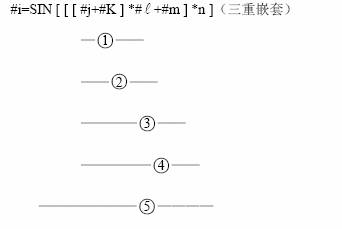
精度
用宏程序功能编序时，必须注意是否有足够精度。
（1）数据格式
由宏程序处理的数据的浮点格式如下：
M*2E
这里：M：1 位符号位+31 位二进制数
?E：1 位符号位+7 位二进制数
（2）运算精度
一个运算执行一次产生下述误差，重复运算，这些误差将累加。
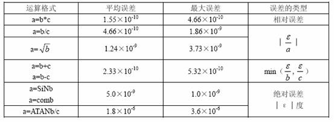
宏程序语句和NC 语句
把如下程序块叫做宏程序语句
（�。┰怂阒噶睿ò�括＝的程序块）
（��）控制指令(包括GOTO 、DO 或END 程序块)
（�＃┖瓿绦虻饔弥噶睿ò�括G65 、G66 、G67 ，由G 代码调用宏程序的程序块）
宏程序语句与NC 语句有如下不同：
（�。┰谕ǔ５コ绦蚨畏绞较拢�单程序段不停止。
（��）刀具半径补偿C，不作为“没有移动的程序段”。
（�＃┯锞渲葱惺奔溆星�别。
（a）没有缓冲的程序段（没有缓冲的M 代码，G31 的程序段）之后有宏程序语句时，要当那个程序段执行完了，然后执行宏程序语句。
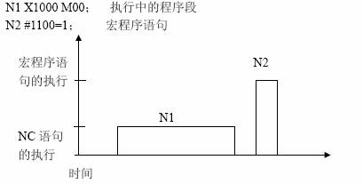
（b）有缓冲的程序段之后有宏程序语句时。
（�。┎挥玫毒甙刖恫钩�C 方式时
开始执行现在的程序段，同时执行下一宏程序语句，直至下一个NC 语句。
��）刀具半径补偿C 方式时
（2－1）现在执行中的程序段后第一个NC 语句不是无移动的程序段（刀具半径补偿平面内没有移动指令的程序段）的情况。
（2－1－1）第2 个NC 语句也不是无移动的程序段的情况。
现在执行中的程序段后的第1 个NC 语句，在这语句后面的宏程序语句被执行。
模态调用 在执行下述指令时，可指令宏程序调用方式，在宏程序调方式执行期间，每次调用指定的宏程序来执行一个移动指令。
G66P （程序号）L（重复次数）＜自变量赋值＞；＜自变量赋值＞和用于简单调用时相同。
在执行下述指令时，会抹消宏程序调用方式。
G67；
注）：在G66 程序段中，G66 必须在所有的自变量之前指定。
用于＜自变量赋值＞中的地址都可使用负号和小数点。
例：钻孔循环
在各定位点执行钻孔循环。
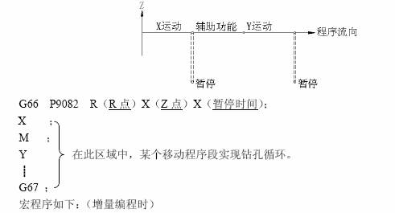
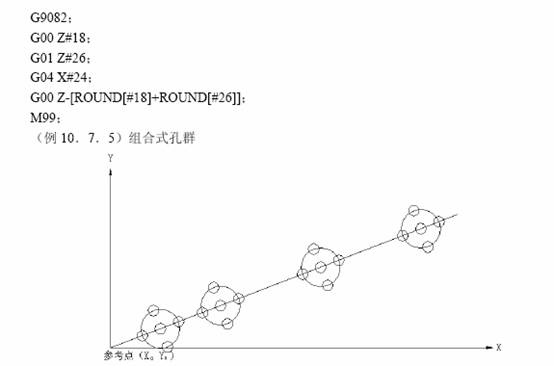
用G代码调用宏程序
一个用于调用宏程序的G 代码可由参数设定。即可用N G65 P△△△△<自变量赋值>来代替。同样的动作，也可用下面的简单指令：
N G××<自变量赋值>
用G 代码××调用宏程序和调用宏程序的程序号子△△△△之间的对应关系，由参数设定。
把调用G 代码××和调用宏程序的程序号△△△△设定在参数中。
除G00 之外，在G01～G255 中最多可以选10 个用于调用宏程序。这些G 代码不能象用G65 指令，那样从MDI 板规定。这些G 代码不能规定在用G 代码的宏程序调指令里，这些G 代码不能用在有M 代码的子程序调用指令里。
设定下述参数：
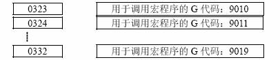
用M代码调用子程序
通过参数设定的M 代码可用于调用子程序。N G X Y ……M98P△△△△ ；的指令即可用
下面的一个简单指令来代替。
N G X Y ……M××；
对M98 来说，子程序显示在COMND 页上，但是MF 和M 代码不发送。
M××代码调用子程序与调用子程序的程序号△△△△之间的对应关系应由参数设定。
除去M30 参数35，36 的MBUF1，MBUF2 之外，在M03 到M97 之中最多可以有3 个可用于宏程序调用。
指令可以从MDI 键盘规定，但是自变量不能写入，在按G 代码调用宏程序的方法所调用的宏程序中或按M 代码或T 代码调用子程序的办法，所用的子程序中，指定了这些M 代码子程序不被调用，同使用普通的M 代码一样。
设定下列参数
用M代码调用宏程序
用参数设定好的M 代码，可以调用宏程序。即：N―G65 P△△△△<指定变量>
用下述指令代替，也同样动作。
N―M××<指定变量>
调用宏程序的程序号△△△△，由对应的参数设定。
除一部分规定的M 代码外，M06～M255 中最多使用10 个调用宏程序。但是，这种M 代码，同G65 一样，不能用MDI 输入，且用G 代码，M 代码，T 代码调用子程序中，不能使用这些M 指令。
参数设定如下：
用T代码调用子程序
用参数设定好的T 代码，可以调用子程序。
N G X Y ………………………Tt；
与此指令对应，用下列二个程序的指令也同样动作。
#149 = t；
N G X Y ………………………M98 P90000；
T 代码中t，作为变量#149 中的自变量存储。在COMND 页面上显示T 代码但TF 和T 代码不送出。可用MDI 指定，但在具有调用子程序的M 代码的程序段中不能被指令。
用G 代码调用宏程序的方式所调用的宏程序中，以及用M 代码或T 代码调用子程序的方式所调用的子程序中，这些T 代码被指令时，不进行子程序的调用，同使用普通的T 代码一样处理。
设定下列参数：
用户宏程序举例
槽的加工
在下图范围内，用户宏程序进行槽的固定循环，Z 为具有一定深度的加工范围，Z 为加工范围的切入量。
（1）用户宏程序调用指令
G65 P9802 Xx Y yZ z R r Q qI I J j K kT tD dF f E e *
各地址的意义
xy：起始点（槽的左下角）XY 轴的绝对坐标值。
zr：Z 点与R 点的绝对坐标值（参照图）
g：一次的切入量（正数）
ij：加工领域的X 方向，Y 方向的长度（正数）（参照图）（当i>j 时，加工效率更高）
k：结束允许量
t：加工宽度不超过刀具直径xt％。
d：刀具半径补偿号（01～99）
f：xy 平面上的进给速度
e：切入时的进给速度，在切入前的1mm 进给用8×e 的进给速度。
（2）用户宏程序体
0 9802；
＃27＝＃[2000＋＝＃7]；
#28=#6+#27;
#29=#5-2*#28;
#30=2*#27*#23/100;
#31=FUP[#29/#30];
#32=#29/#31;
#10=#24+#28;
#11=#25+#28;
161
#12=#24+#4-#28;
#13=#26+#26+#6;
G00 X#10 Y#11;
Z#18;
#14=18;
D01;
#14=#14－＃17；
IF[#14GE13]GOTO 1;
#14=#13;
N1 G01 Z#14 F#8;
X#12 F#9;
#15=1;
WHILE[#15 LE #31] D02;
Y[#11+#15*#32]
;
IF[#15 AND 1 EQO]GOTO02;
X#10;
GOTO 3;
N2 X#12;
N3 #15=#15+1;
END2;
G00 Z #18;
X#10 Y#11;
IF[#14 LE#13]GOTO 4;
G01 Z[#14+1F[8*#8]
;
END1;
N4 M99;